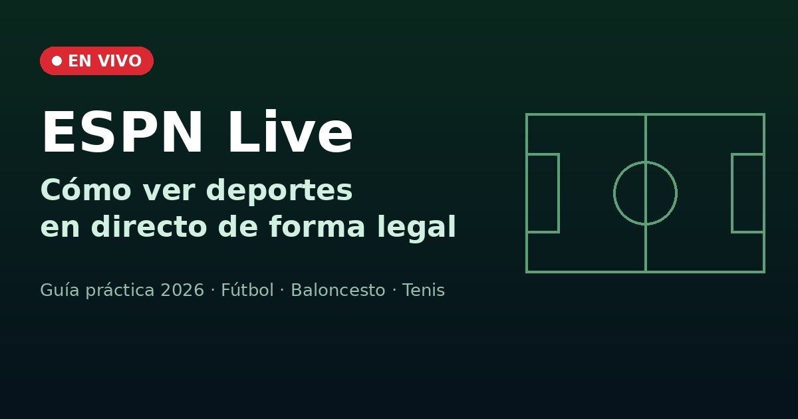
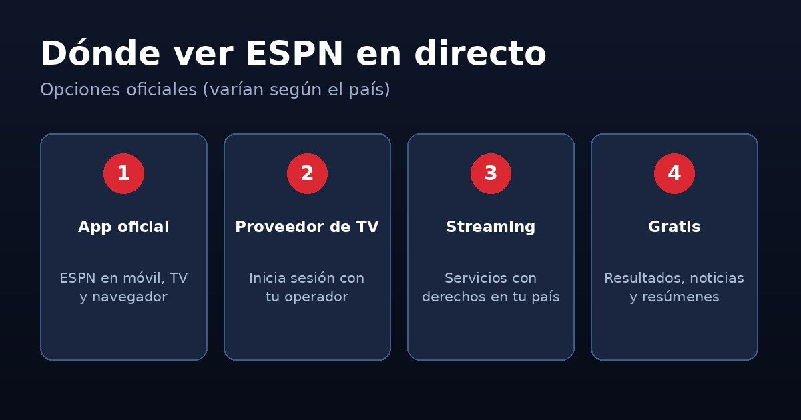
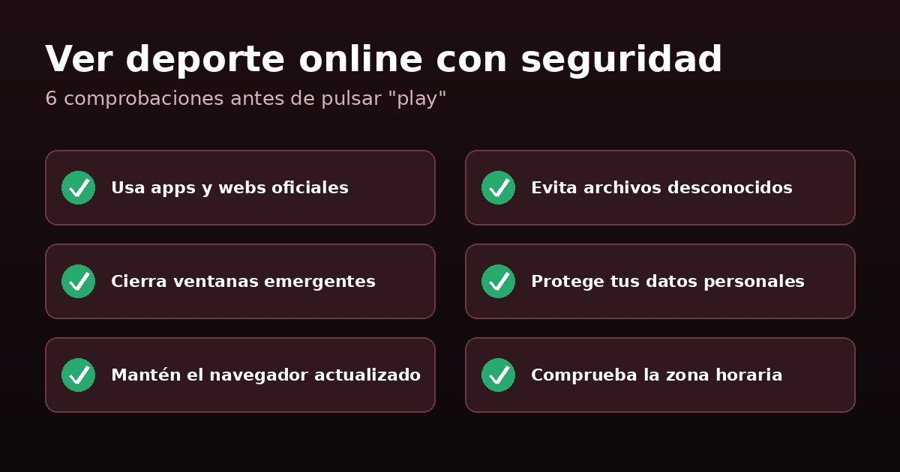

ESPN Live: Cómo Ver Deportes en Directo de Forma Legal y Segura

El deporte reúne a millones de personas que comparten la emoción de cada partido. Desde el fútbol hasta el baloncesto, los aficionados quieren seguir a sus equipos sin perderse los momentos importantes. Hoy es más fácil que nunca consultar resultados, noticias y retransmisiones desde el móvil, el ordenador o la televisión.
“ESPN Live” es una búsqueda muy habitual entre quienes quieren ver deporte en directo. En esta guía verás qué significa, qué opciones oficiales existen y cómo disfrutar de una mejor experiencia sin poner en riesgo tus dispositivos ni tus datos.
¿Qué es ESPN Live?
ESPN es una de las marcas deportivas más conocidas del mundo, con cobertura de fútbol, baloncesto, tenis, béisbol, fútbol americano y muchas otras disciplinas. Cuando alguien busca “ESPN Live”, normalmente quiere ver sus canales o eventos en tiempo real.
La disponibilidad de cada evento depende del país, de los derechos de transmisión y del servicio contratado. Un partido que se emite por ESPN en un territorio puede estar en otro canal o plataforma en otro. Por eso conviene consultar siempre las fuentes oficiales de tu región.
Dónde Ver ESPN en Directo por Vías Oficiales

Estas son las formas más comunes de acceder legalmente al contenido en directo:
- Web y app oficial de ESPN. Disponible en móviles, televisores inteligentes y navegador. Muchos contenidos en directo requieren una suscripción o iniciar sesión.
- Tu proveedor de televisión. Si tu paquete de TV de pago incluye los canales de ESPN, normalmente puedes usar esas credenciales en la app oficial.
- Plataformas de streaming autorizadas. En algunos países, el contenido de ESPN se ofrece a través de servicios de streaming con derechos en ese territorio. Comprueba cuál es el socio oficial en tu región.
- Contenido gratuito. Resultados, estadísticas, noticias y resúmenes suelen estar disponibles sin coste en la web y la app oficiales.
Si una página ofrece todos los partidos “gratis y sin registro”, desconfía: lo más probable es que no tenga los derechos de emisión y que incluya publicidad engañosa o enlaces peligrosos.
Los Deportes Más Buscados en Directo
Fútbol
Es el deporte más seguido del mundo. Los aficionados buscan partidos, alineaciones, resultados actualizados y análisis de las competiciones nacionales e internacionales.
Baloncesto
Partidos rápidos y llenos de emoción. Las estadísticas en directo ayudan a entender el desarrollo del encuentro y el rendimiento de cada jugador.
Tenis
Los grandes torneos reúnen a los mejores jugadores del circuito. Calendarios, cuadros y clasificaciones permiten seguir la competición de principio a fin.
Otros deportes
Béisbol, boxeo, automovilismo y fútbol americano también tienen grandes comunidades de seguidores. Cada uno ofrece una experiencia diferente.
Ventajas de Seguir el Deporte por Internet
- Varios dispositivos: consulta partidos y resultados desde el móvil, la tablet, el ordenador o la smart TV.
- Información al momento: marcadores, noticias y estadísticas actualizados en tiempo real.
- Comodidad: revisa horarios y resúmenes cuando mejor te venga.
- Más variedad: descubre nuevas competiciones y disciplinas.
Cómo Mejorar tu Experiencia con ESPN Live
Comprueba tu conexión
Una conexión estable evita cortes y pérdidas de calidad. Si usas Wi-Fi, acércate al router y cierra aplicaciones que consuman muchos datos.
Elige la pantalla adecuada
El móvil es práctico para consultar resultados, pero una smart TV o un ordenador ofrecen una experiencia más cómoda durante un partido completo.
Consulta los horarios
Revisa los calendarios oficiales de cada competición y ten en cuenta la zona horaria, sobre todo en eventos que se disputan en otros continentes.
Usa servicios autorizados
Los servicios con derechos de emisión ofrecen mejor calidad, menos interrupciones y ninguna sorpresa en forma de malware. Además, apoyas a los clubes y competiciones que sigues.
La Importancia de las Noticias y Estadísticas
Seguir un partido no es solo mirar el marcador. Datos como la posesión, los tiros, las faltas o los puntos ayudan a entender por qué un equipo gana o pierde. Las noticias sobre lesiones, fichajes o cambios de entrenador también influyen en el rendimiento.
Consultar varias fuentes fiables te da una visión más completa y te ayuda a evitar rumores sin confirmar.
Consejos para Ver Deporte Online con Seguridad

- Usa apps y webs oficiales siempre que sea posible.
- No descargues archivos ni “reproductores” desconocidos.
- Cierra las ventanas emergentes que piden datos o permisos.
- No compartas información personal ni bancaria en páginas sospechosas.
- Mantén actualizados el navegador y el sistema operativo.
- Comprueba que los enlaces pertenecen a fuentes confiables.
Estos pequeños hábitos reducen mucho los riesgos mientras navegas.
Conclusión
ESPN Live es la forma en que muchos aficionados buscan mantenerse conectados con el deporte. Fútbol, baloncesto, tenis y muchas otras disciplinas están al alcance de un clic, siempre que elijas las vías adecuadas.
Con una buena conexión, un dispositivo adecuado y servicios oficiales, disfrutarás de los partidos con mejor calidad y sin riesgos. Consulta la disponibilidad en tu país y mantente informado para no perderte ningún momento importante.
Este artículo es una guía informativa independiente y no está afiliado a ESPN. Las opciones de visualización, precios y disponibilidad varían según el país; consulta siempre la información oficial de tu región.